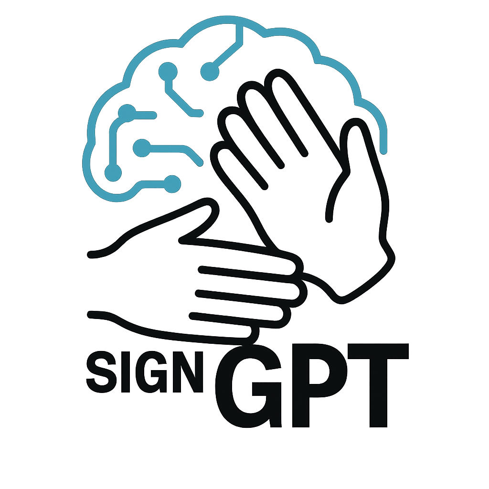
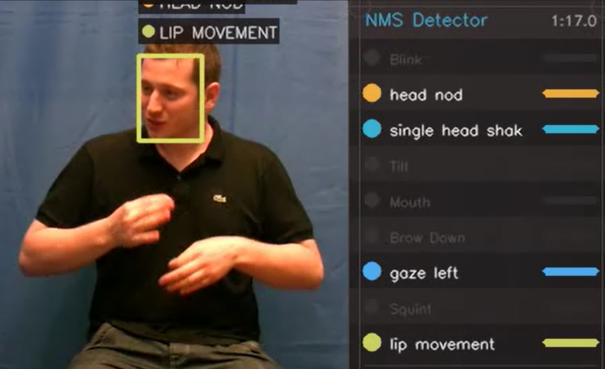
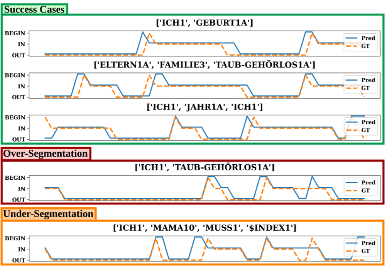
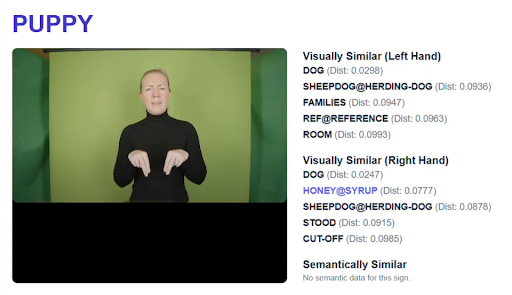

University of Surrey · University of Oxford · University College London
SignGPT is a UKRI EPSRC Programme Grant bringing together specialists in machine vision, generative AI, and sign language linguistics from the University of Surrey, University of Oxford, and University College London, with direct involvement from Deaf organisations and community partners.
The project's long-term vision is to build the first conversational sign language model for British Sign Language — analogous to what large language models have done for written text — enabling seamless, bidirectional communication between signing and hearing individuals. Unlike prior systems that treat signing as a derivative of spoken language, SignGPT treats BSL as deserving its own generative model, with the full complexity of signing built in from the ground up: spatial grammar, non-manual features, productive constructions, and signer variation. To support this, the project aims to curate the world's largest annotated sign language dataset, with tools and resources released openly to the wider research community.
A fundamental challenge facing sign language AI is that progress is constrained not just by the scale of available data, but by its ecological validity — whether it actually reflects how sign languages are used in real communication.
Most sign language datasets are drawn from interpreted broadcast media or web-scraped content. Interpreted signing is produced under live broadcast constraints and differs substantially from everyday Deaf communication — it routinely involves omissions, simplifications, and restructuring relative to the spoken source. Web-scraped material raises concerns around consent, copyright, and unknown signer proficiency. Only around 15% of the BSL Corpus has been annotated at all, and broadcast captions are not verbatim representations of the signing.
Gloss annotations — approximate word-level transcriptions of manual signs — are costly, incomplete, and systematically ambiguous. A single sign can carry multiple meanings depending on context; sociolinguistic variation means the same concept may be realised differently across signers. Crucially, glosses collapse or ignore the productive constructions central to sign grammar: pointing, depicting signs, spatial indexing, and classifiers. Non-manual features — brow raises, eye gaze, mouthings, head movements, body posture — encode grammatical and prosodic meaning simultaneously across multiple articulators, yet are entirely absent from gloss-based supervision.

Grammatical information in sign languages is distributed simultaneously across multiple articulators rather than encoded one unit at a time. The linear, token-based modelling paradigms inherited from spoken-language NLP are a structural mismatch for this. Standard evaluation metrics such as BLEU fail to capture the compositional and spatial structure of signing. Advancing the field requires representations that treat simultaneity, spatial grammar, and non-lexical material as first-class features — supported by naturalistic, Deaf-produced data and scalable annotation tooling.
To address these challenges, the project is developing the Visual Language Toolkit (VLT) — a modular suite of semi-automatic annotation tools designed to scale corpus development without sacrificing linguistic principles. The VLT is under active early development and will be released as open-source software. Current tools include sign segmentation, sign spotting, non-manual feature tracking, and 3D signer reconstruction, all designed for interoperability with ELAN annotation files.


Brown, M., Ranum, O., Fish, E., Proctor, H., Woll, B., Bowden, R., & Cormier, K. (2026). SignGPT and the Visual Language Toolkit. 12th Workshop on the Representation and Processing of Sign Languages: Language in Motion, LREC 2026, Palma de Mallorca, Spain. 📄 Preprint (PDF)